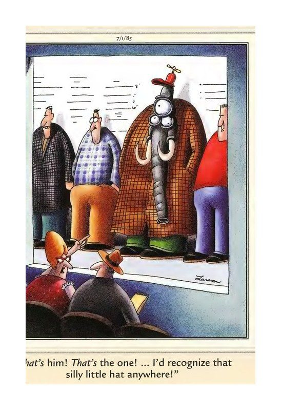

Your Daily Computer Brief
— New "CrashStealer" malware hijacks your Mac by faking Apple
A new macOS infostealer called CrashStealer is spreading through fake "Werkbit Setup" sites. It steals passwords, browser data, and crypto wallets by impersonating Apple's own CrashReporter app — same name, icon, and system ID — and is Apple-notarized, so it slips past Gatekeeper. Once installed it adds a hidden LaunchAgent and shows a fake password box that mimics a real macOS dialog. Jamf Threat Labs flagged it July 14, 2026; if you see "CrashReporter.dmg" in Downloads, don't open it. (Source: BleepingComputer / Jamf Threat Labs) ━━━ 📰 TODAY IN TECH ━━━ • Microsoft has paused its July 2026 Windows 11 update (KB5101650) for some Dell PCs after an Intel driver bug began shutting machines down; affected devices are now blocked from the patch. (Windows Latest, July 15, 2026) • HWMonitor v1.65 restores hotspot-temperature readings on NVIDIA's RTX 50-series "Blackwell" GPUs — data NVIDIA had hidden at launch — handy for spotting overheating. (TechPowerUp, July 14, 2026) • Samsung's July 2026 security patch is rolling out globally to the Galaxy S25 series, fixing 57 flaws; grab it via Settings → Software update. (SamMobile, July 2026) ━━━ 💡 DAILY TIP: Shield your laptop on public Wi-Fi ━━━ When you're on hotel, café, or airport Wi-Fi, turn on a VPN before you log into anything. A VPN encrypts your traffic so nearby snoops can't grab your passwords or bank sessions over the open network. Free options like Proton VPN or the built-in Cloudflare Warp take under two minutes to switch on. (Source: ONYX SYSTEMS) ━━━ 😄 COMEDY BREAK ━━━ "That's him! That's the one! ... I'd recognize that silly little hat anywhere!" — Gary Larson, The Far Side®
Today in Tech
- Microsoft has paused its July 2026 Windows 11 update (KB5101650) for some Dell PCs after an Intel driver bug began shutting machines down; affected devices are now blocked from the patch. (Windows Latest, July 15, 2026)
- HWMonitor v1.65 restores hotspot-temperature readings on NVIDIA's RTX 50-series "Blackwell" GPUs — data NVIDIA had hidden at launch — handy for spotting overheating. (TechPowerUp, July 14, 2026)
- Samsung's July 2026 security patch is rolling out globally to the Galaxy S25 series, fixing 57 flaws; grab it via Settings → Software update. (SamMobile, July 2026)
Daily Tip
When you're on hotel, café, or airport Wi-Fi, turn on a VPN before you log into anything. A VPN encrypts your traffic so nearby snoops can't grab your passwords or bank sessions over the open network. Free options like Proton VPN or the built-in Cloudflare Warp take under two minutes to switch on. (Source: ONYX SYSTEMS) ━━━ 😄 COMEDY BREAK ━━━ "That's him! That's the one! ... I'd recognize that silly little hat anywhere!" — Gary Larson, The Far Side®
